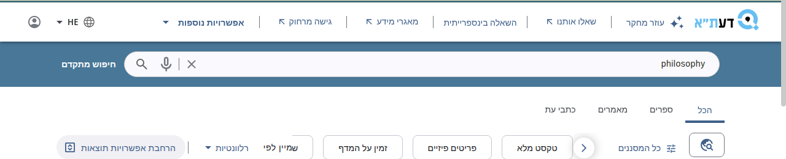
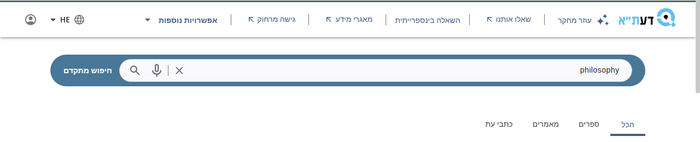
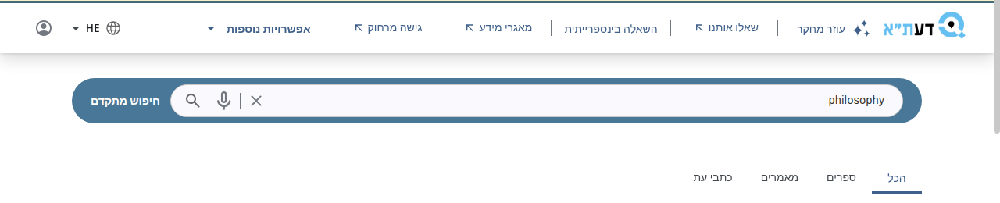
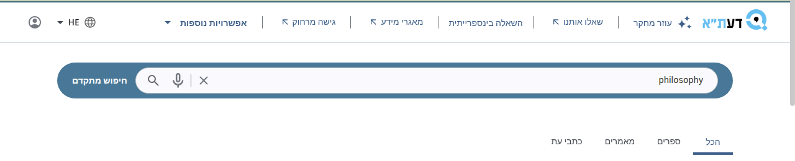
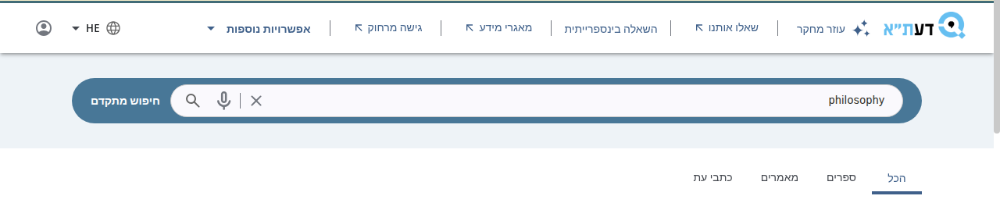
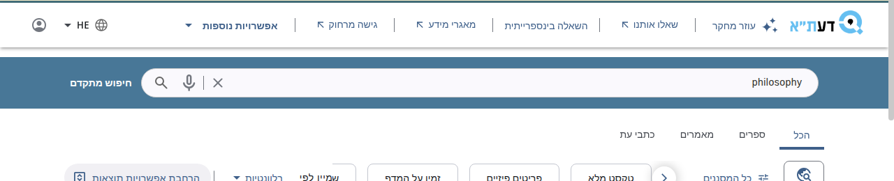
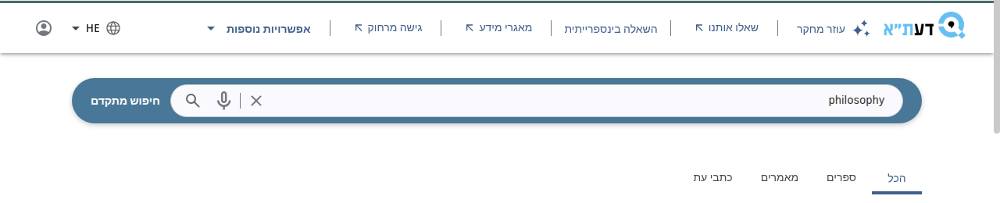

Pick one of six ways to separate the top menu from the search area on the results and full-record pages of the TAU Primo NDE view. No option changes the landing page.
Primo already draws a shadow under the menu, but our blue search band covers it, and on dark blue a shadow barely shows. So five options move the blue into a rounded pill around the search box with white around it, as the University of Liège does. Option A is the one being loaded onto NDE_TEST for trying. Screenshots: NDE_TEST, Hebrew, 6 October 2026.

Full-width blue band directly under the menu. The shadow is there but hidden.

White strip, blue pill, Primo's own shadow under the menu.

As A, with a wider, softer shadow, so the menu seems to float a little higher.

As A, but a thin grey line replaces the shadow. Flat and quiet.

As A, but the strip behind the pill is very light blue, so the search area reads as its own zone.

The blue band stays. A narrow white gap above it lets the shadow show. The smallest change.

As A, but the blue pill also casts a light shadow, so the search box looks raised.
Reply with a letter, or a mix ("A with the line from C"). Nothing here is live for patrons: the chosen option goes to NDE_TEST first, and to NDE only after approval.